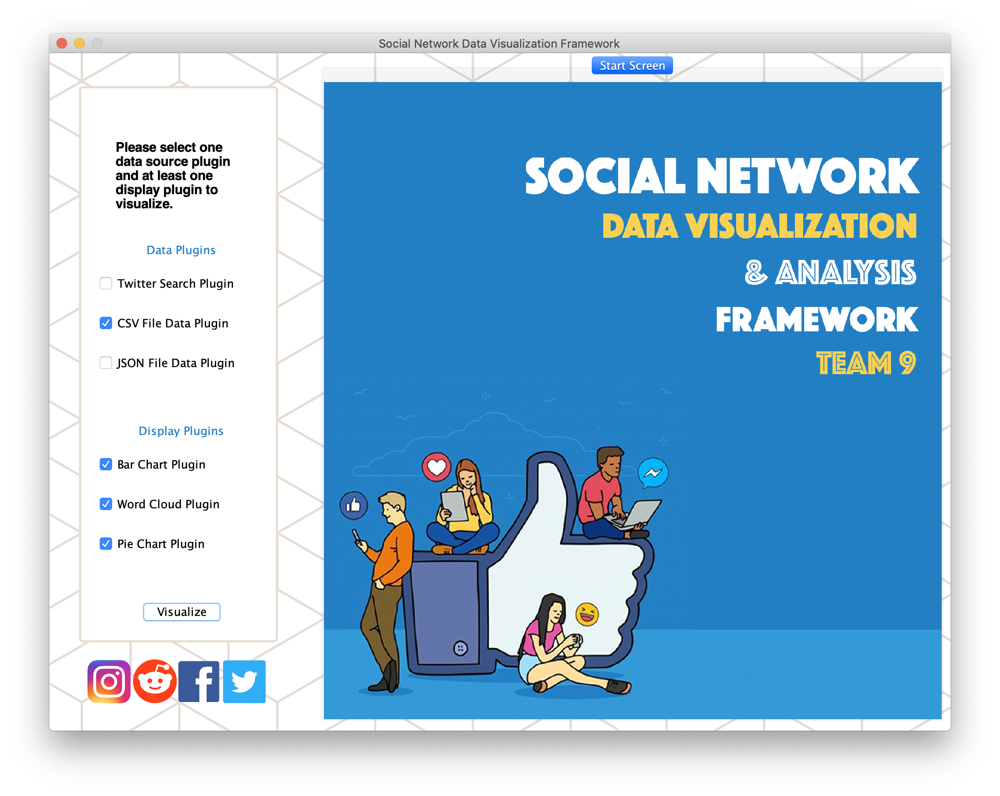
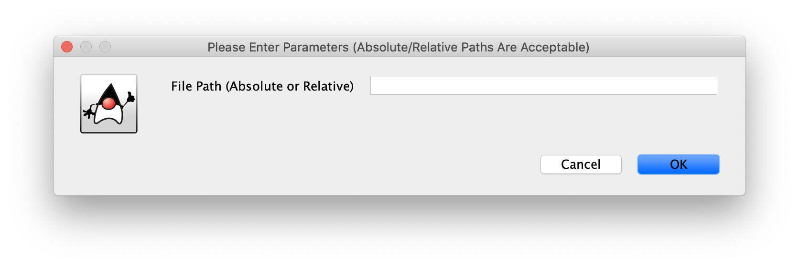
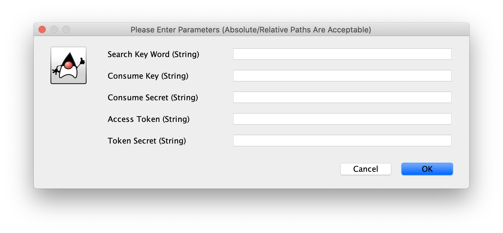
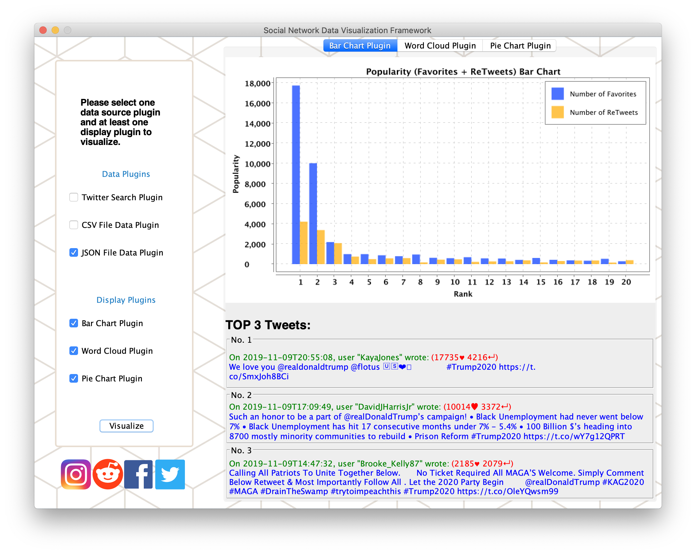
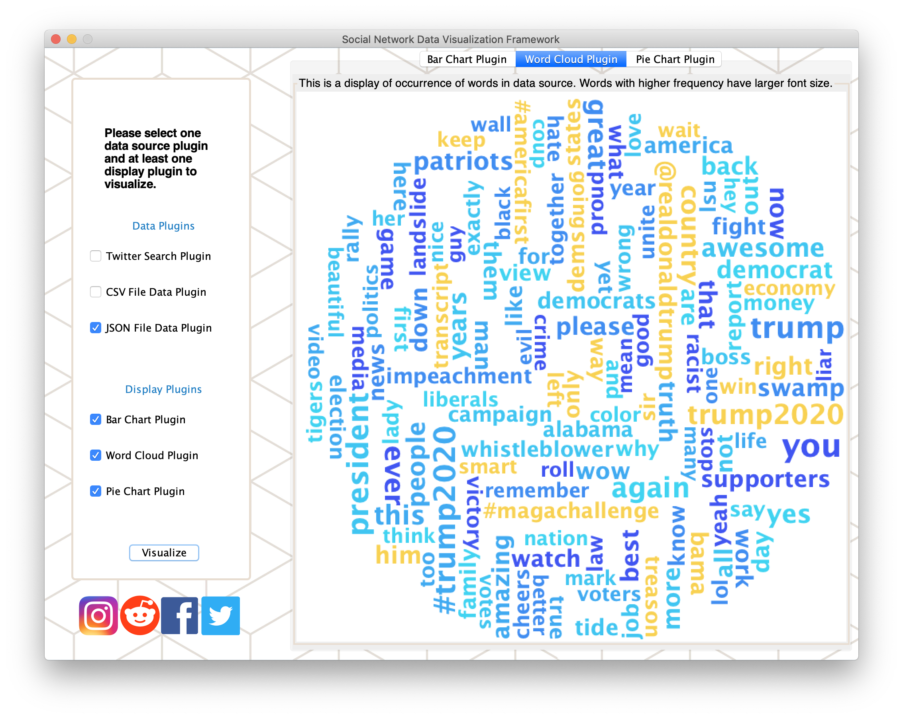
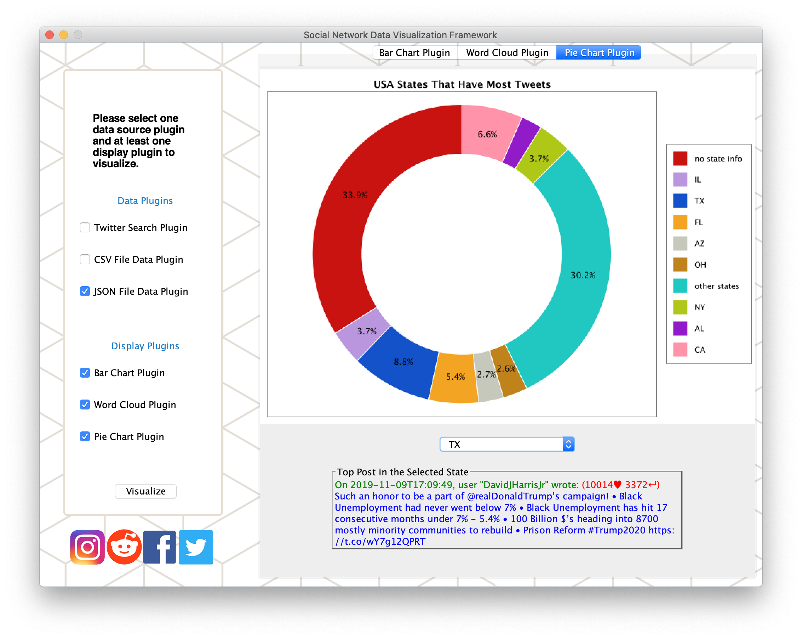

In this project we work as a team to design and implement an extensible data visualization and analysis framework, consisting of an interactive GUI tool and underlying interfaces and implementations.
Social media posts share people’s opinions, ideas and events in small pieces of content. The power that lies behind these posts are way more than they seem to be - they represent the trend of our daily life. What is going on in this world? What if we could analyze the social network post data in various dimensions, and demonstrate the trend visually in the form of graph, charts, and even more than that?
Our framework offers a feasible way to analyze social network posts data and query data based on user-defined requirements, as well as display the analysis result in multiple ways with extensible display plugins. Users may design and implement their own plugins, register them to the framework, and that’s it! Our framework will bring all together to you.
Across the project, we kept asking some questions to us:
- How can you guarantee extensibility and flexibility if you want to design and implement a framework that might be used by many people across different domains?
- “Maximizing reuse minimizes use.” (C. Szyoerski) So how do you trade off between “use” and “reuse”?
- Have you ever consider a proper name for your APIs?
This team project is a course project of CMU 17-514, and it is selected as the “Best Framework” among all teams from the class.
Contributors: Sheng Guan, Qingyi Wang
(Note: due to the CMU academic integrity policy, the code of this project will not be publicized. If you are NOT taking this course currently AND you will NOT take this course in the future, please leave comments or contact me by e-mail in case you want more information.)
Framework Overview
Plugins and Interfaces
In order to use the framework, users need to design and implements two types of plugins: data source plugin and display plugin.
Data Source Plugin
Data source plugin is responsible for reading data from somewhere (e.g., web APIs, local JSON files) and process data into a specific data format. We have defined an interface DataSourcePlugin and each data source plugin MUST implement this interface. The interface contains the following methods that should be implemented:
(Note: due to the CMU academic integrity policy, this part cannot be publicized as it is a part of homework’s solution. If you are NOT taking this course currently AND you will NOT take this course in the future, please leave comments or contact me by e-mail in case you want more information about this part.)
Display Plugin
Display plugin is supposed to query data using our built-in functions in the framework and visualize the data in its own way. If users want to design a display plugin, it must implement the interface DisplayPlugin, which has following methods:
(Note: due to the CMU academic integrity policy, this part cannot be publicized as it is a part of homework’s solution. If you are NOT taking this course currently AND you will NOT take this course in the future, please leave comments or contact me by e-mail in case you want more information about this part.)
Framework Interfaces
Users do not need to know the implementation details of framework, but there are some highly helpful built-in methods provided by our framework that can be used in users’ customized plugins:
(Note: due to the CMU academic integrity policy, this part cannot be publicized as it is a part of homework’s solution. If you are NOT taking this course currently AND you will NOT take this course in the future, please leave comments or contact me by e-mail in case you want more information about this part.)
Usage
Once you run the program, you will see the main interface of our framework.

The left sidebar shows all registered plugins. You need to select ONLY one data source plugin and AT LEAST one display plugins.
Say now we select the “JSON File Data Plugin” and all display plugins, then click the button “Visualize”, a separate window will prompt asking for value of the parameter “File Path”, and you should enter the path of the JSON file.

Please note that multiple parameters might be asked. If we select “Twitter Search Plugin”, which accesses twitter official API, you are required to give values of multiple parameters.

We choose the “JSON File Data Plugin” as the data source plugin and select all display plugins, then click “Visualize”. The dataset we use here contains about 5000 most recent tweets from Twitter (by 11/10/2019 11:59 PM).
As we use three display plugins, we could see three tabs on the right section of the main interface. The first one (see the picture below) is a bar chart plugin, which shows the top 20 popualr post entries (popularity is determned by sum of “Favorites” and “ReTweets”); it also lists the contents of the top 3 popular post entries.

The second one is the “Word Cloud Plugin”, which shows the most frequent words across all post entries in the dataset. A word with a bigger font size also indicates higher frequency of appearance.

Another display is “Pie Chart Plugin”. It categorizes all post entries by location (USA state), and shows the results in a pie chart. In addition, you can choose a US state and the plugin is able to show the top post from the state.

The display plugins are highly informative as they might provide much information about your dataset that is processed by our framework.
For example, from the word cloud diagram, we found that the most frequent words are all politics-related (e.g., “impeachment”, “president”, “racists”, “voters”, …) and some of the words are strongly related with President Trump’s personal tweets (e.g., “great”, “democrat”, “treason”, “liar”, …). This observation is not surprising, as President Trump is famous for its speeches on Twitter and people are enthusiastic about making fun with his personal slogans.
It is also found, from the pie chart plugin, that most of the posts are from Southern or Central states in the USA (e.g., TX, FL, AZ, OH, …). It also corresponds to our assumptions that most of Trump’s supporters are from Southern and Central states and people who tweeted with “trump2020” are more likely to be Trump’s supporter.
The content above is only one example of plugins you can design and implement. You may also design you own ones: the only thing you have to do is to implement our pre-defined interfaces (DataSourcePlugin and DisplayPlugin) adn register them into our framework.
Community Support
This project was selected as one of the “Best Framework” in the CMU course 17514, and some other teams need to use our framework and implement their own plugins. In order to do this, we publicized the code to the whole class, wrote a detailed documentation, and continuously provided help and support through GitHub platform.